SOLT Calibration Standards Creation#
Introduction#
In scikit-rf, a calibration standard is treated just as a regular one-port or two-port skrf.Network, defined by its full S-parameters. It can represent reflection, transmission, load, and even arbitrary-impedance standards. Since no additional errors are introduced in circuit modeling and fitting, this approach allows the highest calibration accuracy, and is known as a data-based standard in the terminology of VNA vendors.
However, VNA calibration standards are traditionally defined using a circuit model with fitted coefficients. Since data-based standards are often offered as premium products, many model-based calibration kits are still being used and manufactured (even at 50 GHz [1]). This necessitates the creation of their network models before they can be used in scikit-rf’s calibration routines.
This example explains network creation from coefficients given in both the HP-Agilent-Keysight format and the Rohde & Schwarz / Anritsu format. Both are essentially the same circuit model, but the latter format uses different units of measurement for an offset transmission line.
Calculated responses for Keysight 85032F (Type-N plug), Keysight 85033E (3.5 mm plug), generic flush standards (SMA plugs), and Maury Microwave 8050CK10 (3.5 mm plug) are also plotted in this document as examples.
Note
Only coaxial standards are covered by this guide. The calculation is different for waveguides. In particular, the scaling by \(\sqrt{\text{GHz}}\) for coaxial lines cannot be applied to waveguides because loss is also a function of their physical dimensions, with significantly more complicated formulas. Do you have waveguide experience? If so, you can help by contributing to the doc.
Alternatives to scikit-rf Modeling#
Before we begin, it’s worth pointing out some alternatives.
In scikit-rf, you are able to use any existing standard definition by its S-parameters. If you already have your standard defined as a network in other tools (e.g. in your favorite circuit simulator, or actual measurements results), you can simply export the S-parameters to Touchstone files for use in scikit-rf. Similarly, if you’re already using a data-based calibration standard, it should be possible to use its data directly. The S-parameters may be stored in device-specific file formats, consult your vendor about whether they can be exported as a Touchstone file.
As a special case, if flush (zero-length) standards are used - meaning that the standards sit right at the connector’s reference plane without extended bodies - sometimes one can assume the calibration standards are ideal for non-critical measurements. In scikit-rf, one can create ideal responses conveniently by defining an ideal transmission line and calling the short(), open(), match(), and thru() methods (explained in the Preparation section).
Important
Ideal assumptions are only approximately valid for flush standards. Most lab-grade standards are offset standards, always use these standards with the correct definitions entered. They have additional electrical delays from their extended bodies, phase errors would be unacceptably large under ideal assumptions. Using a flush standard behind a Thru adapter creates the same phase deviations. See below for the distinction between flush and offset standards.
HP-Agilent-Keysight Coefficient Format#
After the necessary background is introduced, let’s begin.
For the purpose of this guide, we’re going to model the Keysight 85032F, Type-N, 50 Ω, DC to 9 GHz calibration kit (plug), with the following coefficients.
Parameter |
Unit |
Open |
Short |
Load |
Thru |
|---|---|---|---|---|---|
\(\text{C}_0\) |
\(10^{-15} \text{ F}\) |
89.939 |
|||
\(\text{C}_1\) |
\(10^{-27} \text{ F/Hz}\) |
2536.800 |
|||
\(\text{C}_2\) |
\(10^{-36} \text{ F/Hz}^2\) |
-264.990 |
|||
\(\text{C}_3\) |
\(10^{-45} \text{ F/Hz}^3\) |
13.400 |
|||
\(\text{L}_0\) |
\(10^{-12} \text{ H}\) |
3.3998 |
|||
\(\text{L}_1\) |
\(10^{-24} \text{ H/Hz}\) |
-496.4808 |
|||
\(\text{L}_2\) |
\(10^{-33} \text{ H/Hz}^2\) |
34.8314 |
|||
\(\text{L}_3\) |
\(10^{-42} \text{ H/Hz}^3\) |
-0.7847 |
|||
Resistance |
\(\Omega\) |
50 |
|||
Offset Delay |
ps |
40.856 |
45.955 |
0 |
0 |
Offset Loss |
\(\text{G}\Omega\) / s |
0.93 |
1.087 |
0 |
0 |
Offset \(Z_0\) |
\(\Omega\) |
50 |
49.992 |
50 |
50 |
Reference \(Z_0\) |
\(\Omega\) |
50 |
50 |
50 |
50 |
Circuit Model#
Before we start creating their network definitions, we first need to know the underlying circuit model and the meaning of these coefficients. As this schematic shows, this is the HP-Agilent-Keysight model for a calibration standard.
Circuit Model of Calibration Standards
Termination Impedance#
A shunt impedance is connected at the end of an offset transmission line, and models the distributed capacitance or inductance in the open or short standard. It’s given as a third-degree polynomial with four coefficients, \(y(f) = a_0 + a_1 f + a_2 f^2 + a_3 f^3\), where \(f\) is the frequency and \(a_i\) are the coefficients. For an open standard, they’re \(\text{C}_0\), \(\text{C}_1\), \(\text{C}_2\), \(\text{C}_3\), the first constant term is in femtofarad. For a short standard, they’re \(\text{L}_0\), \(\text{L}_1\), \(\text{L}_2\), \(\text{L}_3\), the first constant term is in picohenry.
Important
The reflection coefficient (\(S_{11}\)) of the termination impedance is calculated with respect to the system impedance (\(Z_\mathrm{ref}\)), not the impedance of the offset transmission line (\(Z_\text{off}\) or \(Z_\text{c}\)). [15]
Offset Line#
In front of the calibration standard, there exists an offset lossy transmission line. To understand its context, we need to distinguish two types of calibration standards: flush (zero-length) and offset standards.
In a flush standard, the physical standard is located directly at the reference plane of the port. This design is widely used in uncharacterized generic SMA calibration “standards” (if they can be called as such) in amateur radio. Flush standards are not always of low quality, they’re also found in some lab-grade standards, such as Keysight 85031B for APC-7 connectors.
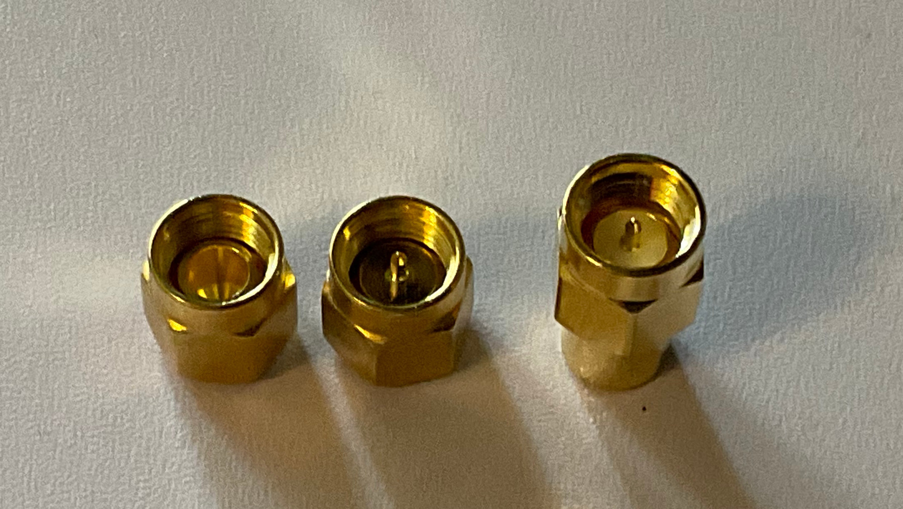
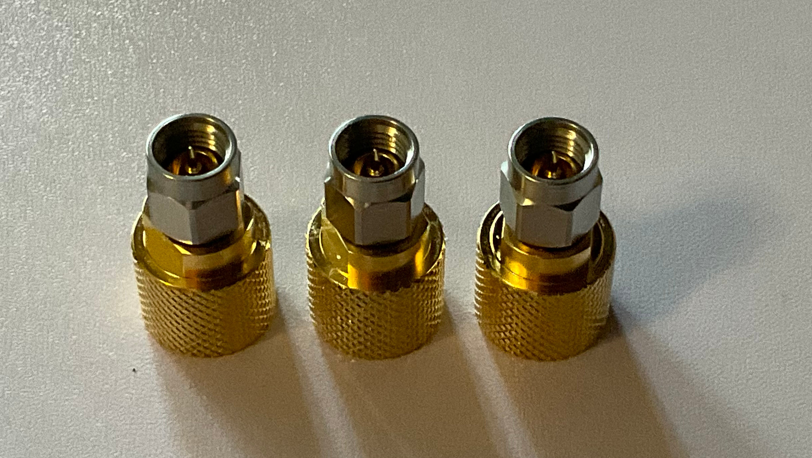
Flush standards sit flush against the connector, with no additional structure. Offset standards have extended bodies, introducing electrical delays.
However, most lab-grade standards are designed as offset standards, with a short length between the reference plane of the connector and the physical location of the standard. This can be done to improve the predictability of a standard’s electrical characteristics [2], or merely a limitation of a connector’s mechanical design (e.g. all Type-N connectors have a reference plane offset of 5.258-5.360 mm [3]). Both factors introduce an electrical length that must be accounted for, otherwise it would introduce a large phase deviation.
This offset length is modeled as a transmission line using three parameters:
Lossless Offset Impedance (\(Z_\text{off}\)): A real characteristic impedance, with line loss (\(R\) and \(G\)) neglected. This often matches the VNA’s reference impedance, but not always. Sometimes a value slightly different from the reference impedance is used to model physical imperfections, such as 50.209 Ω or 49.992 Ω. Also, waveguide standards use a special normalized value
1.Offset Delay (\(t_\text{delay}\)) - One-way electrical delay, given in picoseconds (ps).
Offset Loss (\(A_\text{loss}\)). The nominal attenuation at 1 GHz per unit time, given in GΩ/s (gigaohms per second). Scale this value by \(\sqrt{f / (\text{1 GHz})}\) for other frequencies. The unit GΩ/s is unconventional, but for a reason. To express a transmission line segment’s length, both a distance (in meters) or a time delay (in seconds) can be used. Defining the line with respect to time allows calculating \(R = A_\text{loss} t_\text{delay}\) in ohms, without needing to explicitly define the medium permittivity \(\epsilon\).
Important
These parameters are given in datasheets in scaled units, but unscaled SI units should be use in all calculations (without prefix): ohms (Ω), seconds (s), ohms per second (Ω/s), and hertz (Hz).
RLCG parameters#
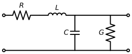
RLCG transmission line model
As these parameters are non-standard, we need to convert them to the familiar RLCG line parameters. After algebraic manipulation of [4], equation 2B.4, the corresponding frequency-dependent RLCG parameters are computed as follows.
The term \(L_0\) is the ideal line inductance, \(L_\text{cond} = R / (2 \pi f)\) is the frequency-dependent inductance of imperfect conductors due to skin effect. In [5], nearly the same equations were derived, except that the term \(L_\text{cond}\) has been omitted. It must be included here to be consistent with the original Keysight publication [4] (otherwise the phase error would be greater than 0.1 degrees at 9 GHz for the 85032F).
Using these parameters, one can calculate the propagation constant (\(\gamma\)) and the complex characteristic impedance (\(Z_c\)) of the lossy line. Note that in the frequency-dependent RLCG(f) model, each frequency has its own RLCG parameters and line constants.
Important
Our formulation is not exactly identical to the official Keysight calculations and other works. The latter model used a low-loss approximation when calculating line constants, while our formulation starts from the RLCG parameters to derive the exact line constants. Both formulations have negligible differences (Keysight 85056A’s magnitude and phase angle are in agreement to 4 decimal places at 50 GHz), this difference is only academic.
Note
We show the RLCG approach due to its wide understanding and ease of use. If reproducing the exact numerical values down to the last digit is absolutely required, see Appendix for derivation and code for Keysight’s official low-loss approximation.
Reference Impedance#
All calibration standards have an implied reference impedance \(Z_\text{ref}\). Some Keysight datasheets show it as the “System \(Z_0\)” [6], but it’s not always given out explicitly. One may require some context to deduce it: if a standard is named Keysight 85032F Type N (50) Calibration Kit, \(Z_\text{ref}\) is 50 Ω.
It’s not to be confused with the offset transmission line’s characteristic impedance \(Z_0\) (lossless) or \(Z_c\) (lossy), which can have a value of 49.992 Ω. Unlike the line impedance, the reference impedance’s purpose is to renormalize the S-parameters to the standard form, since all S-parameters are relative. This is always set to the reference impedance of the VNA system: 50 Ω or 75 Ω.
Connector Discontinuity#
Since the reference impedance appears to be an arbitrary choice, one may conclude that any calibration standard can be used to calibrate any VNA port (as long as they’re mechanically compatible) regardless of its offset line impedance. For example, one may attempt to calibrate a 50 Ω VNA port by connecting it directly to a 75 Ω calibration standard, so that all calibrated measurements behave as if they were made using a 75 Ω system. Likewise, if the reference impedance of a 75 Ω calibration standard is renormalized, one can apparently predict its ideal S-parameters on a 50 Ω VNA in order to abuse it as a 50 Ω standard.
However, this assumption is not true. Renormalization cannot predict the parasitic effects at the physical test port due to discontinuity of the electromagnetic field, from a sudden change of the transmission line’s physical dimensions. [7][9] It’s approximately a capacitive discontinuity. [18] This effect exists even if both sides have the same characteristic impedance, as long as the coaxial line’s physical dimensions have a step change (e.g. 3.5 mm to 2.92 mm port). [8]
In theory, the excitation of high-order modes at a discontinuity makes calibration unreliable, since it can be sensitive to perturbation and not repeatable. Indeed, pathological cases have been observed at 50 GHz even between a pair of “perfect” 1.85 mm connectors - the mated connector pair generates a resonance because its mechanical tolerance is too precise, the near-zero gap forms a resonator. [25][26]
Nevertheless, in most practical measurements unaffected by such pathological phenomena, it has been showed that, if the DUT and the calibration standards have the same connector design, both produce a similar discontinuity, this discontinuity can often be calibrated out, leaving only a tiny error negligible for all but the most demanding metrological applications. [24] Such is the case when measuring 75 Ω devices after calibration by 75 Ω standards using a 50 Ω port. [9] However, if the DUT and the calibration standards have different connector designs (e.g. cross-connecting 3.5 mm, 2.92 mm and SMA), this discontinuity produces a slight measurement error. [8]
Thus, for satisfactory results, the calibration standards and the DUT must use the same connector. For the best result, the test port (or adapter) must be of high quality and matches the calibration standards as well.
Fitting Non-Uniqueness and Physical Interpretability#
The phase shift of a small capacitance or inductance is approximately linear, it’s often possible to model it equally well as a termination reactance, or as an electrical delay in an offset transmission line. [4][10]
For example, Keysight 85033D’s datasheet show two models for the short standard, either as a pure time delay, or a time delay with inductance. [6]
Due to the non-uniqueness of standard definitions, caution is required when interpreting individual terms in standard definitions: the overall response is meaningful, the individual terms may or may not. Most lab-grade calibration standards attempt to ensure that the standard definitions are physically meaningful [11], but it’s not always guaranteed.
When defining a custom calibration standard via curve fitting, separating the phase shift due to the offset transmission line and termination reactances is difficult. With prior knowledge, one can fix the offset length by mechanical measurements [12], or fixing the termination capacitance by electromagnetic theory or simulation. [10] Both require precise knowledge and modeling of the standard’s design. For example, historical studies focused on hollow air-filled open standards (using the theory of circular waveguide below cutoff) [10], but it’s no longer applicable today as many open standards use dielectric support. When there’s a lack of information, a delay-only model may be the only practical choice.
Tip
In fact, a delay-only short standard is the only model supported by older VNA’s firmware, such as the HP 8510 [13]. External calibration via scikit-rf allows you to bypass this limitation.
Neglected Terms#
Both an open or short circuit can be modeled as an electrical delay only without reactance, or vice versa. The delay-only model is most common for the short standard, since it was used historically.
A matched load generates little reflection, thus it’s often simply modeled as a \(Z_0\) termination. Since its reflection coefficient is approximately 0, its phase angle is meaningless, its electrical delay is thus also neglected.
The Thru standard is sometimes modeled with an offset delay only, if loss is considered negligible.
Some calibration kits don’t have any Thru delay data. These kits are meant for Flush Thru, Swap Equal Adapters, or Unknown Thru calibration, without using Thru’s data.
Flush Thru is the traditional SOLT calibration practice: port 1 and port 2 are connected directly, without using adapters. This Thru is ideal by definition and has zero length, no modeling is required. In a Swap Equal Adapters calibration, a pair of two delay-matched adapters are involved, making the Thru’s actual length invisible. The Unknown Thru calibration algorithm is relatively newer, which doesn’t require a characterized Thru.
Note
Sometimes an offset loss still appears in the Load and Thru’s definitions, but with a zero electrical length. These parameters should be ignored. The zero offset delay disables the offset transmission line.
Plug and Socket#
Finally, it’s worth clarifying Keysight’s plug and socket notations. If a plug standard is used to calibrate a socket, it’s denoted by datasheets as -m- with respect to itself, or (f) with respect to the test port. If a socket standard is used to calibrate a plug, it’s denoted by datasheets as -f- with respect to itself, or (m) with respect to the test port. [14]
Preparation#
Equipped with this circuit model, we can start to model the calibration standards.
First, we need to import some library definitions, specify the frequency range of our calculation. Here, we used 1 MHz to 9 GHz, with 1001 points. You may want to adjust it for your needs. We also define an ideal_medium with a \(50 \space\Omega\) port impedance for the purpose of some future calculations.
[1]:
import numpy as np
import skrf
from skrf.media import DefinedGammaZ0, DistributedCircuit
# reference impedance of the S-parameters (not the offset line)
z0_ref = 50
freq = skrf.Frequency(1, 9000, 1001, "MHz")
ideal_medium = DefinedGammaZ0(frequency=freq, z0=z0_ref)
Ideal Responses#
It’s useful to know the special case first: ideal calibration standards are easily created by calling the open(), short(), match(), and thru() methods in the ideal_medium, the first three return a 1-port network. The thru() method returns a two-port network.
[2]:
Modeling the Offset Transmission Line#
To correctly model the offset transmission line, one should use the offset delay, offset loss, and offset \(Z_0\) to derive the RLCG parameters of the lossy line. Internally, scikit-rf automatically derives its propagation constant (\(\gamma\)) and the complex characteristic impedance (\(Z_c\)) of the lossy line.
The relationship between the offset line parameters and RLCG line parameters has already been given in the discussion above. Let’s translate these formulas to code.
[3]:
Tip
The broadcasting feature in numpy is used here. The quantities r, l are frequency-dependent, thus they’re arrays, not scalars. But instead of looping over each frequency explicitly and adding them to an array, here, arrays are automatically created by the multiplication of a scalar and a numpy.array. We’ll continue to use this technique.
With the function offset_rlcg() defined, we can now calculate the line constants for the open and short standards by calling it.
[4]:
At this point, we already have everything we need to know about this offset line. The other half of the task is straightforward: create a two-port network for this transmission line in scikit-rf using these RLCG parameters, scikit-rf will help us automatically calculating its propagation constant \(\gamma l\) and the complex characteristic impedance \(Z_c\).
It’s easy to perform this task in scikit-rf:
First, create a
DistributedCircuitmedium with four arrays (RLCG) as inputs. The createdDistributedCircuitrepresents a physical medium.When creating the medium, we also need to specify the S-parameter reference impedance \(Z_\text{ref}\) as
z0_port=50(orz0_port=75).This reference impedance \(Z_\text{ref}\) is not to be confused with the offset line impedances \(Z_\text{off}\) and \(Z_c\). \(Z_\text{ref}\) (real) is always the nominal system or port impedance of the VNA, while the line impedances \(Z_\text{off}\) (real) and \(Z_c\) (complex) may differ due to physical imperfection and losses.
Then, an actual line with a 1-meter length is derived by calling the medium’s
line()method.
[5]:
medium_open = DistributedCircuit(frequency=freq,
R=rlcg_open[0], L=rlcg_open[1], C=rlcg_open[2], G=rlcg_open[3],
z0_port=z0_ref
)
line_open = medium_open.line(
d=1, unit='m'
)
medium_short = DistributedCircuit(frequency=freq,
R=rlcg_short[0], L=rlcg_short[1], C=rlcg_short[2], G=rlcg_short[3],
z0_port=z0_ref
)
line_short = medium_short.line(
d=1, unit='m'
)
Modeling the Shunt Impedance#
Then, we need to model the shunt impedance of the open and short standards. For the open standard, it’s a capacitance. For the short standard, it’s an inductance.
Both are modeled as third-degree polynomials, as functions of frequency. In numpy, one can quickly define such a function via np.poly1d([x3, x2, x1, x0]). This is a higher-order function which accepts a list of coefficients in descending order, and returns a callable polynomial function.
After the polynomial is evaluated, we can generate the frequency-dependent capacitors and inductors. The open circuit is modeled as a series medium.capacitor() followed by an ideal medium.short(). The short circuit is modeled as a series medium.inductor() followed by an ideal medium.short().
According to [15] the S-parameters of the capacitor and inductor are defined with respect to the system’s reference impedance, not the offset transmission line, so we use ideal_medium to avoid confusion. Nevertheless, medium_open or medium_short are also acceptable: they also correctly use the port impedance of skrf.Media()’ as the reference impedance.
[6]:
# use ideal_medium, not medium_open and medium_short to avoid
# reference impedance confusions.
capacitor_poly = np.poly1d([
13.400 * 1e-45,
-264.990 * 1e-36,
2536.800 * 1e-27,
89.939 * 1e-15
])
capacitor_list = capacitor_poly(freq.f)
shunt_open = ideal_medium.capacitor(capacitor_list) ** ideal_medium.short()
inductor_poly = np.poly1d([
-0.7847 * 1e-42,
34.8314 * 1e-33,
-496.4808 * 1e-24,
3.3998 * 1e-12
])
inductor_list = inductor_poly(freq.f)
shunt_short = ideal_medium.inductor(inductor_list) ** ideal_medium.short()
Note on Series and Shunt Impedance#
To model a shunt impedance such as a capacitance for the open standard, one can use a series medium.capacitor() terminated by a medium.short().
# [PORT] ---- [CAPACITOR] --- [PORT]
# |
# |
# [SHORT]
# |
# |
# GND
shunt_open = ideal_medium.capacitor(capacitor_list) ** ideal_medium.short()
Or a parallel medium.shunt_capacitor() terminated by a medium.open().
# [PORT] -----v----- [PORT] ----- [OPEN]
# |
# |
# [SHUNT CAPACITOR]
# |
# |
# [GND]
shunt_open = ideal_medium.shunt_capacitor(capacitor_list) ** ideal_medium.open()
Both are equivalent. The medium.open() termination is important for shunt_capacitor(): it creates a two-port network with a capacitor to ground - this network is similar to an oscilloscope terminator, which is a 2-port device with a shunt 50 Ω resistance - so the other “output” port needs to be open. Otherwise, a line terminated solely by a shunt_capacitor() produces incorrect S-parameters.
Completion#
Finally, we connect these model components together, and add definitions for the ideal load and Thru, this completes our modeling.
[7]:
open_std = line_open ** shunt_open
short_std = line_short ** shunt_short
load_std = ideal_medium.match()
thru_std = ideal_medium.thru()
Now you can pass these standards into scikit-rf’s calibration routines, or use the write_touchstone() method to save them on the disk for future use.
Note
Here, the open_std, short_std and load_std we generated are one-port networks, but most scikit-rf’s calibration routines expect a two-port networks as standards since they’re used in two-port calibrations. You can use the function skrf.two_port_reflect() to generate a two-port network from two one-port networks. For more information, be sure to read the SOLT calibration example in the doc.
Plotting#
[8]:
%matplotlib inline
import matplotlib.pyplot as plt
skrf.stylely()
Finally, let’s take a look at the magnitudes and phase shifts of our standards.
Open#
[9]:
fig, ax = plt.subplots(1, 2)
fig.set_size_inches(12, 5)
plt.suptitle("Keysight 85032F Plug Open (S11)")
open_std.plot_s_db(ax=ax[0], color='red', label="Magnitude")
open_std.plot_s_deg_unwrap(ax=ax[1], color='blue', label="Phase")
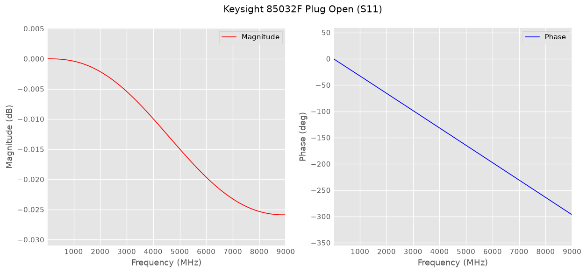
Short#
[10]:
fig, ax = plt.subplots(1, 2)
fig.set_size_inches(12, 5)
plt.suptitle("Keysight 85032F Plug Short (S11)")
short_std.plot_s_db(ax=ax[0], color='red', label="Magnitude")
short_std.plot_s_deg_unwrap(ax=ax[1], color='blue', label="Phase")
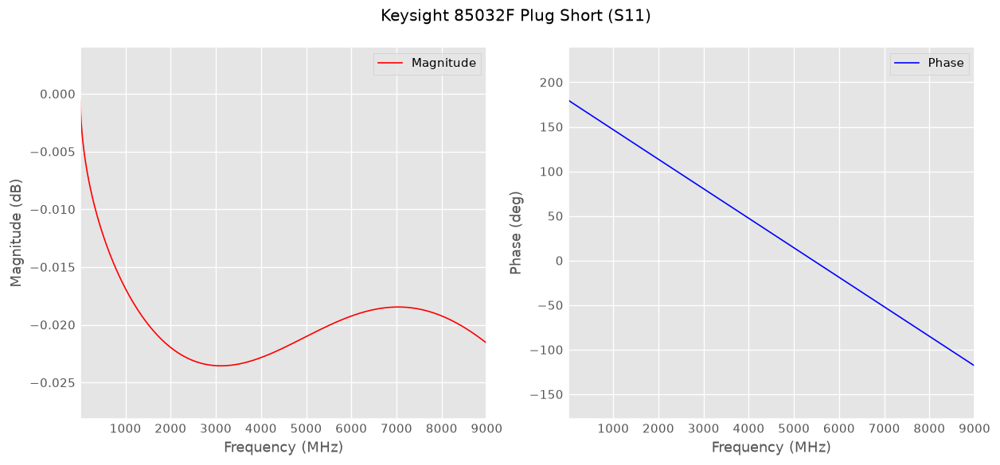
Conclusion#
As shown in the graphs above, the losses in the standards are extremely low, on the order of 0.01 dB throughout the spectrum. Meanwhile, the phase shift is what really needs compensation for. At 1 GHz, the phase shift has already reached 25 degrees or so.
Important
Most lab-grade standards are offset standards, so large phase shifts are unavoidable. Always use these standards with the correct definitions entered.
Code Snippet#
For convenience, you can reuse the following code snippets to generate calibration standard networks from coefficients in Keysight format.
[11]:
import numpy as np
import skrf
from skrf.media import DefinedGammaZ0, DistributedCircuit
def keysight_calkit_offset_line(freq, offset_delay, offset_loss, offset_z0, ref_z0):
if offset_delay or offset_loss:
r = offset_loss * offset_delay * np.sqrt(freq.f / 1e9)
l = (offset_delay * offset_z0) + r / (2 * np.pi * freq.f)
c = offset_delay / offset_z0
g = 0
medium = DistributedCircuit(frequency=freq,
R=r, L=l, C=c, G=g,
z0_port=ref_z0
)
offset_line = medium.line(d=1, unit='m')
return medium, offset_line
else:
medium = DefinedGammaZ0(frequency=freq, z0=ref_z0)
line = medium.line(d=0)
return medium, line
def keysight_calkit_open(freq, offset_delay, offset_loss, c0, c1, c2, c3, offset_z0, ref_z0):
# Capacitance is defined with respect to the system reference impedance ref_z0, not the
# lossy line impedance. In scikit-rf, the return values of `shunt_capacitor()` and
# `medium.open()` methods are (correctly) referenced to z0_port, which has been set to
# ref_z0.
medium, line = keysight_calkit_offset_line(freq, offset_delay, offset_loss, offset_z0, ref_z0)
if c0 or c1 or c2 or c3:
poly = np.poly1d([c3, c2, c1, c0])
capacitance = medium.shunt_capacitor(poly(freq.f)) ** medium.open()
else:
capacitance = medium.open()
return line ** capacitance
def keysight_calkit_short(freq, offset_delay, offset_loss, l0, l1, l2, l3, offset_z0, ref_z0):
# Inductance is defined with respect to the system reference impedance ref_z0, not the
# lossy line impedance. In scikit-rf, the return values of `shunt_inductance()` and
# `medium.short()` methods are (correctly) referenced to z0_port, which has been set to
# ref_z0.
medium, line = keysight_calkit_offset_line(freq, offset_delay, offset_loss, offset_z0, ref_z0)
if l0 or l1 or l2 or l3:
poly = np.poly1d([l3, l2, l1, l0])
inductance = medium.inductor(poly(freq.f)) ** medium.short()
else:
inductance = medium.short()
return line ** inductance
def keysight_calkit_load(freq, offset_delay=0, offset_loss=0, offset_z0=50, ref_z0=50):
medium, line = keysight_calkit_offset_line(freq, offset_delay, offset_loss, offset_z0, ref_z0)
ideal_medium = DefinedGammaZ0(frequency=freq, z0=ref_z0)
load = ideal_medium.match()
return line ** load
def keysight_calkit_thru(freq, offset_delay=0, offset_loss=0, offset_z0=50, ref_z0=50):
medium, line = keysight_calkit_offset_line(freq, offset_delay, offset_loss, offset_z0, ref_z0)
thru = medium.thru()
return line ** thru
Example: Keysight 85033E#
To show another usage example of the code snippet above, we’re going to model the Keysight 85033E, 3.5 mm, 50 Ω, DC to 9 GHz calibration kit (plug), with the following coefficients. [22] This is one of the most widely used 3.5 mm calibration standards across labs.
Parameter |
Unit |
Open |
Short |
Load |
Thru |
|---|---|---|---|---|---|
\(\text{C}_0\) |
\(10^{-15} \text{ F}\) |
49.433 |
|||
\(\text{C}_1\) |
\(10^{-27} \text{ F/Hz}\) |
-310.13 |
|||
\(\text{C}_2\) |
\(10^{-36} \text{ F/Hz}^2\) |
23.168 |
|||
\(\text{C}_3\) |
\(10^{-45} \text{ F/Hz}^3\) |
-0.15966 |
|||
\(\text{L}_0\) |
\(10^{-12} \text{ H}\) |
2.0765 |
|||
\(\text{L}_1\) |
\(10^{-24} \text{ H/Hz}\) |
-108.54 |
|||
\(\text{L}_2\) |
\(10^{-33} \text{ H/Hz}^2\) |
2.1705 |
|||
\(\text{L}_3\) |
\(10^{-42} \text{ H/Hz}^3\) |
-0.01 |
|||
Resistance |
\(\Omega\) |
50 |
|||
Offset Delay |
ps |
29.243 |
31.785 |
0 |
0 |
Offset Loss |
\(\text{G}\Omega\) / s |
2.2 |
2.36 |
2.3 |
2.3 |
Offset \(Z_0\) |
\(\Omega\) |
50 |
50 |
50 |
50 |
Reference \(Z_0\) |
\(\Omega\) |
50 |
50 |
50 |
50 |
Note
Although Keysight specified offset losses for the Load and Thru standards, they have offset delays of 0, effectively removing the transmission line, hence these losses should be ignored. The offset Thru standard is meant to be an unknown or flush Thru.
Important
Keysight 85033E’s plug and socket calibration standards have mostly identical parameters, but one difference: the Open standard (socket) has an offset loss of 2.3 GΩ/s, but the Open standard (plug) has an offset loss of 2.2 GΩ/s.
Creation#
To create this calibration kit using the above code snippet:
[12]:
freq = skrf.Frequency(1, 9000, 1001, "MHz")
keysight_85033e_plug_open_std = keysight_calkit_open(
freq,
offset_delay=29.243e-12, offset_loss=2.2e9,
c0=49.433e-15, c1=-310.13e-27, c2=23.168e-36, c3=-0.15966e-45,
offset_z0=50, ref_z0=50
)
keysight_85033e_plug_short_std = keysight_calkit_short(
freq,
offset_delay=31.785e-12, offset_loss=2.36e9,
l0=2.0765e-12, l1=-108.54e-24, l2=2.1705e-33, l3=-0.01e-42,
offset_z0=50, ref_z0=50
)
load_std = keysight_calkit_load(freq)
thru_std = keysight_calkit_thru(freq)
Plotting#
Open#
[13]:
fig, ax = plt.subplots(1, 2)
fig.set_size_inches(12, 5)
plt.suptitle("Keysight 85033E Plug Open (S11)")
keysight_85033e_plug_open_std.plot_s_db(ax=ax[0], color='red', label="Magnitude")
keysight_85033e_plug_open_std.plot_s_deg_unwrap(ax=ax[1], color='blue', label="Phase")
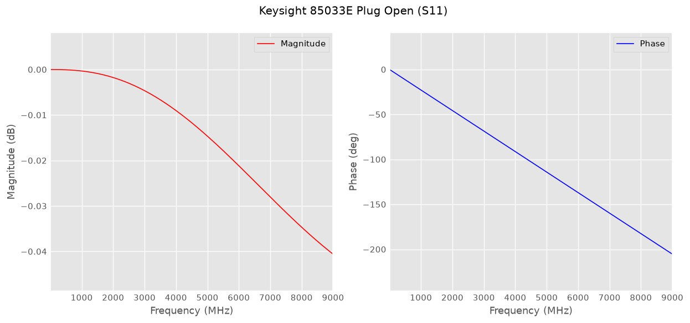
Short#
[14]:
fig, ax = plt.subplots(1, 2)
fig.set_size_inches(12, 5)
plt.suptitle("Keysight 85033E Plug Short (S11)")
keysight_85033e_plug_short_std.plot_s_db(ax=ax[0], color='red', label="Magnitude")
keysight_85033e_plug_short_std.plot_s_deg_unwrap(ax=ax[1], color='blue', label="Phase")
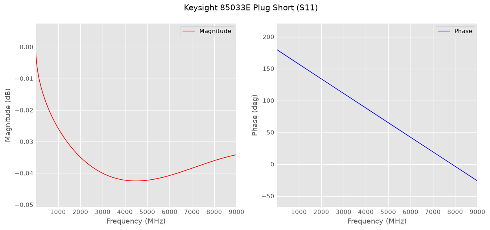
Conclusion#
Again, entering the correct offset delay is critical when using an offset calibration standard.
Example: Generic SMA Plug Calkit#
And now for something completely different. The author has measured the typical parameters of generic SMA standards with the following data using NanoRFE VNA6000 with respect to the Keysight 85033E calibration standard. The numerically fitted circuit parameters are shown below.
Parameter |
Unit |
Flush Open |
Flush Open |
Thru Open |
|---|---|---|---|---|
VNA Connector |
SMA Socket |
3.5 mm Socket |
SMA Plug |
|
DUT Connector |
SMA Plug |
SMA Plug |
SMA Thru+Plug |
|
\(\text{C}_0\) |
\(10^{-15} \text{ F}\) |
13.670 |
28.065 |
13.670 |
Offset Delay |
ps |
0 |
0 |
47.08 |
Offset \(Z_0\) |
\(\Omega\) |
50 |
50 |
50 |
Reference \(Z_0\) |
\(\Omega\) |
50 |
50 |
50 |
The generic Short is essentially a flush short, so only the generic Open standard is shown. Due to measurement noise, only a linear fit has been performed. All the above results are preliminary, and has not yet undergone rigorous verification.
Creation#
[15]:
freq = skrf.Frequency(1, 9000, 1001, "MHz")
generic_sma_plug_on_sma_socket_open_std = keysight_calkit_open(
freq,
offset_delay=0, offset_loss=0,
c0=13.670e-15, c1=0, c2=0, c3=0,
offset_z0=50, ref_z0=50
)
generic_sma_plug_on_apc35_socket_open_std = keysight_calkit_open(
freq,
offset_delay=0, offset_loss=0,
c0=28.065e-15, c1=0, c2=0, c3=0,
offset_z0=50, ref_z0=50
)
generic_sma_plug_on_sma_socket_thru_open_std = keysight_calkit_open(
freq,
offset_delay=47.08e-12, offset_loss=0,
c0=13.670e-15, c1=0, c2=0, c3=0,
offset_z0=50, ref_z0=50
)
Plotting#
Flush Open#
[16]:
fig, ax = plt.subplots(1, 2)
fig.set_size_inches(12, 5)
ax[0].set_title("Generic SMA Open Plug Phase (S11)")
generic_sma_plug_on_sma_socket_open_std.plot_s_deg_unwrap(ax=ax[0], color='red', label="SMA Port")
generic_sma_plug_on_apc35_socket_open_std.plot_s_deg_unwrap(ax=ax[0], color='blue', label="3.5 mm Port")
ax[1].set_title("Thru + SMA Plug Open Phase (S11)")
generic_sma_plug_on_sma_socket_thru_open_std.plot_s_deg_unwrap(ax=ax[1], color='red', label="SMA Port")
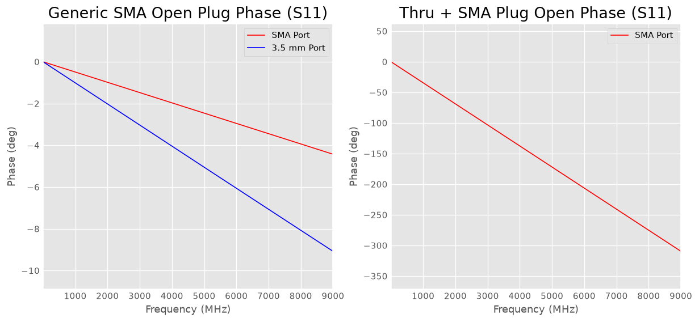
Conclusion#
When a generic SMA standard is used to calibrate an SMA socket, the phase error is less than 10 degrees in comparison to an ideal open standard. This justifies the ideal assumption for non-critical measurements.
In comparison, when the generic SMA open standard is cascaded with a generic Thru adapter to form an SMA socket, this effectively converts the standard to an offset standard, with a phase deviation in excess of 300 degrees. When calibrating SMA plugs and coaxial cables, the ideal assumption creates large measurement errors. This can be corrected by characterizing the offset delay of the Thru standard, equivalent to applying a port extension to all measurements.
When the same generic open standard is measured on SMA and 3.5 mm sockets, significant differences are observed. The author believes a true physical fringe capacitance difference is unlikely. It’s more likely due to circuit parasitics, such as the shift of a connector’s effective reference plane between its connected and unconnected state (the calibration is only valid for the connected port, not an unterminated one). [2] Connector parasitics such as pin depths [16][17] and step capacitances in a cross-mated 3.5 mm and SMA/2.92 mm pair are likely also involved. [8]
This is the possible reason that a pinless hollow open standard is no longer used in RF measurements (though they found historical metrology uses in APC-7 and Type-N connectors with acceptable results). The lack of a center conductor makes the electrical characteristic of the open standard unstable and port-dependent.
Tip
HP 85032B/E Type-N standard was a historical example with a pinless Open. Kurt Poulsen (OZ7OU) discovered that most generic Type-N standards (plug) circulating on the market are its clones [23], allowing one to use HP’s definition [22] in non-critical calibration. However, this is not applicable to socket types due to the lack of matching center conductor extenders.
Rohde & Schwarz / Anritsu Coefficient Format#
On Rohde & Schwarz and Anritsu VNAs, a slightly different format is used to define the coefficients. Here’s an example of a Maury Microwave 8050CK10, a 3.5 mm, DC to 26.5 GHz calibration kit defined in Rohde & Schwarz’s format. [19]
Parameter |
Unit |
Open |
Short |
Load |
Thru |
|---|---|---|---|---|---|
\(\text{C}_0\) |
\(10^{-15} \text{ F}\) |
62.54 |
|||
\(\text{C}_1\) |
\(10^{-15} \text{ F/GHz}\) |
1284.0 |
|||
\(\text{C}_2\) |
\(10^{-15} \text{ F/GHz}^2\) |
107.6 |
|||
\(\text{C}_3\) |
\(10^{-15} \text{ F/GHz}^3\) |
-1.886 |
|||
\(\text{L}_0\) |
\(10^{-12} \text{ H}\) |
0 |
|||
\(\text{L}_1\) |
\(10^{-12} \text{ H/GHz}\) |
0 |
|||
\(\text{L}_2\) |
\(10^{-12} \text{ H/GHz}^2\) |
0 |
|||
\(\text{L}_3\) |
\(10^{-12} \text{ H/GHz}^3\) |
0 |
|||
Resistance |
\(\Omega\) |
50 |
|||
Offset Length |
mm |
4.344 |
5.0017 |
0 |
17.375 |
Offset Loss |
\(\text{dB / }\sqrt{\text{GHz}}\) |
0.0033 |
0.0038 |
0 |
0.0065 |
Modeling the Offset Transmission Line#
As shown, it’s essentially the same circuit model, the only difference is that the offset transmission line is defined in different units of measurements: offset delay is defined as a physical length instead of a time delay, offset loss is defined in decibel. The offset \(Z_0\) is defined to be the system impedance \(Z_\text{ref}\) (50 Ω or 75 Ω), thus unlisted.
Tip
Note that a signal travels in both directions in a \(S_{11}\) measurement, so the loss from \(S_{11}\) in decibel is doubled numerically in comparison to the stated offset loss.
We can reuse the same calculations in the Keysight model after a simple unit conversion using these equations. [15]
where \(D\) and \(L\) are the offset length (meter) and offset loss (\(\text{dB / }\sqrt{\text{GHz}}\)) in the R&S model, \(t_\text{delay}\) and \(A_\text{loss}\) are the offset delay (second) and offset loss (\(\Omega\) / s) in Keysight’s model, \(\epsilon_r\) is the dielectric constant, it’s air by definition, thus \(\epsilon_r = 1\), and \(c_0\) is the speed of light. The term \(20 \log_{10}{(\mathrm{e})}\) is a conversion from decibel to neper.
[17]:
def rs_to_keysight(rs_offset_length, rs_offset_loss, offset_z0=50):
offset_delay = rs_offset_length / skrf.constants.c
offset_loss = skrf.mathFunctions.db_2_np(rs_offset_loss * offset_z0 / offset_delay)
return offset_delay, offset_loss
After unit conversion, we can define standards just like how calibration standards in Keysight-style coefficients are defined.
[18]:
z0_ref = 50
offset_delay, offset_loss = rs_to_keysight(4.344e-3, 0.0033)
rlcg_open = offset_rlcg(freq, offset_delay, offset_loss, z0_ref)
medium_open = DistributedCircuit(frequency=freq,
R=rlcg_open[0], L=rlcg_open[1], C=rlcg_open[2], G=rlcg_open[3],
z0_port=z0_ref
)
line_open = medium_open.line(
d=1, unit='m'
)
offset_delay, offset_loss = rs_to_keysight(5.0017e-3, 0.0038)
rlcg_short = offset_rlcg(freq, offset_delay, offset_loss, z0_ref)
medium_short = DistributedCircuit(frequency=freq,
R=rlcg_short[0], L=rlcg_short[1], C=rlcg_short[2], G=rlcg_short[3],
z0_port=z0_ref
)
line_short = medium_short.line(
d=1, unit='m'
)
offset_delay, offset_loss = rs_to_keysight(17.375e-3, 0.0065)
rlcg_thru = offset_rlcg(freq, offset_delay, offset_loss, z0_ref)
medium_thru = DistributedCircuit(frequency=freq,
R=rlcg_thru[0], L=rlcg_thru[1], C=rlcg_thru[2], G=rlcg_thru[3],
z0_port=z0_ref
)
line_thru = medium_thru.line(
d=1, unit='m'
)
Modeling the Shunt Impedance#
The definition of shunt impedance is identical to the Keysight format.
But, beware of the units used for the capacitance and inductance! In the given table, the capacitances are given in \(10^{-15} \text{ F}\), \(10^{-15} \text{ F/GHz}\), \(10^{-15} \text{ F/GHz}^2\), and \(10^{-15} \text{ F/GHz}^3\). For Keysight and Anritsu VNAs, they’re given in \(10^{-15} \text{ F}\), \(10^{-27} \text{ F/Hz}\), \(10^{-36} \text{ F/Hz}^2\) and \(10^{-45} \text{ F/Hz}^3\). Inductance units have the same differences. Always double-check the units before start modeling. To convert the units from the first to the second format, multiply \(x_1\), \(x_2\) and \(x_3\) by 1000 (don’t change the constant term \(x_0\)). For consistency, we’ll use the second format in the code.
Since the inductance in the short standard is neglected, only the capacitance in the open standard is modeled, the short is modeled as ideal.
[19]:
capacitor_poly = np.poly1d([
-0.001886 * 1000e-45,
0.1076 * 1000e-36,
-1.284 * 1000e-27,
62.54 * 1e-15
])
capacitor_open = capacitor_poly(freq.f)
shunt_open = ideal_medium.shunt_capacitor(capacitor_open) ** ideal_medium.open()
# or: shunt_open = ideal_medium.capacitor(capacitor_open) ** ideal_medium.short()
# see the Keysight example for explanation.
shunt_short = ideal_medium.short()
Completion#
Finally, we connect these model components together.
[20]:
open_std = line_open ** shunt_open
short_std = line_short ** shunt_short
load_std = ideal_medium.match()
thru_std = line_thru
Plotting#
Again, let’s examine the behaviors of the finished standards.
Open#
[21]:
fig, ax = plt.subplots(1, 2)
fig.set_size_inches(12, 5)
plt.suptitle("Maury Microwave 8050CK10 Open (S11)")
open_std.plot_s_db(ax=ax[0], color='red', label="Magnitude")
open_std.plot_s_deg_unwrap(ax=ax[1], color='blue', label="Phase")
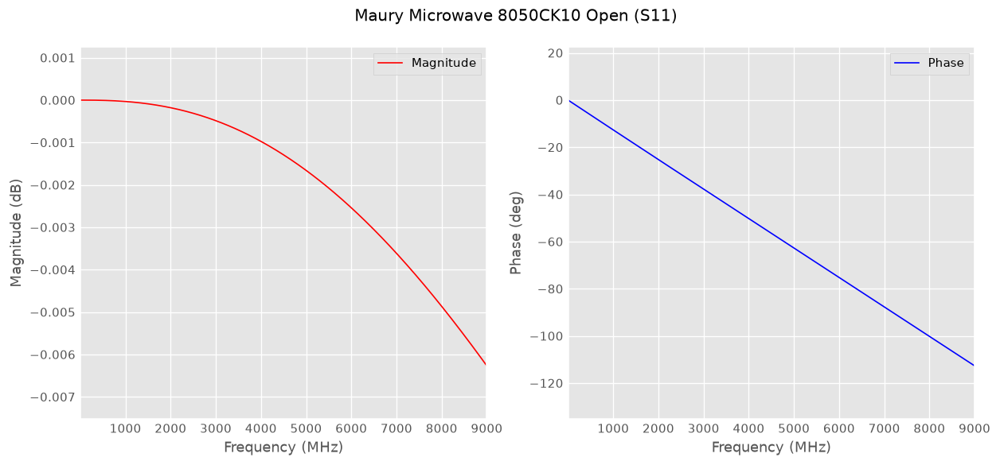
Short#
[22]:
fig, ax = plt.subplots(1, 2)
fig.set_size_inches(12, 5)
plt.suptitle("Maury Microwave 8050CK10 Short (S11)")
short_std.plot_s_db(ax=ax[0], color='red', label="Magnitude")
short_std.plot_s_deg_unwrap(ax=ax[1], color='blue', label="Phase")
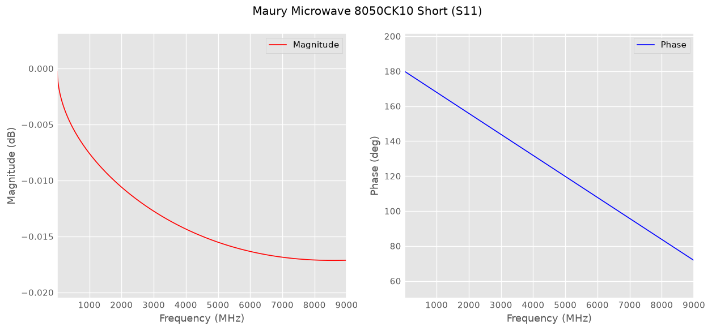
Thru#
[23]:
fig, ax = plt.subplots(1, 2)
fig.set_size_inches(12, 5)
plt.suptitle("Maury Microwave 8050CK10 Thru (S21)")
thru_std.s21.plot_s_db(ax=ax[0], color='red', label="Magnitude")
thru_std.s21.plot_s_deg_unwrap(ax=ax[1], color='blue', label="Phase")
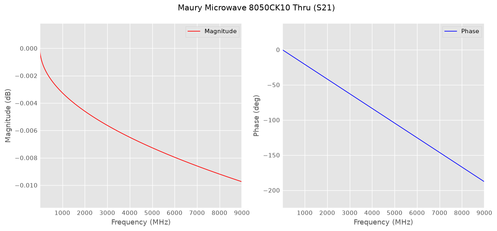
Conclusion#
The results are similar to the Keysight calibration standards and the generic Thru adapter. The S21 graph for the Thru standard explains why adding an electrical delay sometimes can serve as a crude but usable calibration method (“port extension”) for VNA measurements. Again, losses are extremely low, phase shift is the source of non-ideal properties in the offset standards.
Code Snippet#
For convenience, you can reuse the following code snippet to generate calibration standard networks from coefficients in Rohde & Schwarz and Anritsu format.
import numpy as np
import skrf
from skrf.media import DefinedGammaZ0
def keysight_calkit_offset_line(freq, offset_delay, offset_loss, offset_z0, ref_z0):
if offset_delay or offset_loss:
r = offset_loss * offset_delay * np.sqrt(freq.f / 1e9)
l = (offset_delay * offset_z0) + r / (2 * np.pi * freq.f)
c = offset_delay / offset_z0
g = 0
medium = DistributedCircuit(frequency=freq,
R=r, L=l, C=c, G=g,
z0_port=ref_z0
)
offset_line = medium.line(d=1, unit='m')
return medium, offset_line
else:
medium = DefinedGammaZ0(frequency=freq, z0=ref_z0)
line = medium.line(d=0)
return medium, line
def rs_calkit_offset_line(freq, rs_offset_length, rs_offset_loss, offset_z0, ref_z0):
offset_delay = rs_offset_length / skrf.constants.c
if offset_delay != 0:
offset_loss = skrf.mathFunctions.db_2_np(rs_offset_loss * offset_z0 / offset_delay)
else:
offset_loss = 0
return keysight_calkit_offset_line(freq, offset_delay, offset_loss, offset_z0, ref_z0)
def rs_calkit_open(freq, offset_length, offset_loss, c0, c1, c2, c3, offset_z0, ref_z0):
# Capacitance is defined with respect to the system reference impedance ref_z0, not the
# lossy line impedance. In scikit-rf, the return values of `shunt_capacitor()` and
# `medium.open()` methods are (correctly) referenced to z0_port, which has been set to
# ref_z0.
medium, line = rs_calkit_offset_line(freq, offset_length, offset_loss, offset_z0, ref_z0)
if c0 or c1 or c2 or c3:
poly = np.poly1d([c3, c2, c1, c0])
capacitance = medium.shunt_capacitor(poly(freq.f)) ** medium.open()
else:
capacitance = medium.open()
return line ** capacitance
def rs_calkit_short(freq, offset_length, offset_loss, l0, l1, l2, l3, offset_z0, ref_z0):
# Inductance is defined with respect to the system reference impedance ref_z0, not the
# lossy line impedance. In scikit-rf, the return values of `shunt_inductance()` and
# `medium.short()` methods are (correctly) referenced to z0_port, which has been set to
# ref_z0.
medium, line = rs_calkit_offset_line(freq, offset_length, offset_loss, offset_z0, ref_z0)
if l0 or l1 or l2 or l3:
poly = np.poly1d([l3, l2, l1, l0])
inductance = medium.inductor(poly(freq.f)) ** medium.short()
else:
inductance = medium.short()
return line ** inductance
def rs_calkit_load(freq, offset_length, offset_loss, offset_z0, ref_z0):
medium, line = rs_calkit_offset_line(freq, offset_length, offset_loss, ref_z0, ref_z0)
load = medium.match()
return line ** load
def rs_calkit_thru(freq, offset_length, offset_loss, offset_z0, ref_z0):
medium, line = rs_calkit_offset_line(freq, offset_length, offset_loss, offset_z0, ref_z0)
thru = medium.thru()
return line ** thru
freq = skrf.Frequency(1, 9000, 1001, "MHz")
open_std = rs_calkit_open(
freq,
offset_length=4.344e-3, offset_loss=0.0033,
offset_z0=50, ref_z0=50,
# Due to unit differences, the numerical values of c1, c2 and c3
# must be multiplied by 1000 from the R&S datasheet value. For
# Anritsu, this is not needed. Check the units on your datasheet!
c0=62.54 * 1e-15,
c1=-1.284 * 1000e-27,
c2=0.1076 * 1000e-36,
c3=-0.001886 * 1000e-45,
)
short_std = rs_calkit_short(
freq,
offset_length=5.0017e-3, offset_loss=0.0038,
offset_z0=50, ref_z0=50,
l0=0, l1=0, l2=0, l3=0
)
load_std = rs_calkit_load(
freq,
offset_length=0, offset_loss=0,
offset_z0=50, ref_z0=50,
)
thru_std = rs_calkit_thru(
freq,
offset_length=17.375e-3, offset_loss=0.0065,
offset_z0=50, ref_z0=50,
)
Appendix: Derivation of Offset Transmission Line \(\gamma\) and \(Z_c\)#
Derivation of RLCG Line Parameters#
According to Keysight [4], equation 2B.3, the offset transmission line parameters are defined with respect to a physical coaxial line using the following relations:
where \(v = c_0\) [13] is the speed of light, \(\mu_0\) is the vacuum permeability \(\epsilon_r\) is the medium’s relative permittivity, \(R_0\) and \(L_0\) are the distributed nominal resistance and perfect-conductor inductance, \(C\) is the distributed capacitance, \(D\) and \(d\) are the outer and inner diameters of the coaxial line.
By algebraic manipulation:
Finally, apply definitions in [4], equation 2B.2:
The full RLCG line parameters are derived as follows:
Keysight’s Low-Loss Approximation#
One can calculate the line constant using the general formula from RLCG parameters.
This is the method used in scikit-rf’s DistributedCircuit in general.
However, Keysight’s official publication [4] and other works [15][20] used a low-loss approximation to calculate the line constants. We show both the formulas and code to manually calculate \(\gamma\) and \(Z_c\) using the same low-loss approximation. This can be useful if identical numerical values to the last digit are absolutely required.
Regroup the terms in \(\gamma\)’s expression (see [21], equation 2.83):
When \(G=0\):
Since \(L = L_0 + \frac{R}{\omega}\):
Apply the first-order Taylor expansion \(\sqrt{1 + x} = 1 + x/2\) [20]:
By plugging \(R\), \(L_0\), \(C\) into these equations, one can eventually obtain the official formulas in [4]:
Implementation#
The following code implements Keysight’s method for calculating line constants.
def offset_gamma_and_zc(offset_delay, offset_loss, offset_z0):
alpha_l = (offset_loss * offset_delay) / (2 * offset_z0)
alpha_l *= np.sqrt(freq.f / 1e9)
beta_l = 2 * np.pi * freq.f * offset_delay + alpha_l
gamma_l = alpha_l + 1j * beta_l
zc = (offset_z0) + (1 - 1j) * (offset_loss / (4 * np.pi * freq.f)) * np.sqrt(freq.f / 1e9)
return gamma_l, zc
Code Snippet#
Replace keysight_calkit_offset_line() in the code snippet above with the following definition to replicate the exact Keysight data:
def keysight_calkit_offset_line(freq, offset_delay, offset_loss, offset_z0, ref_z0):
if offset_delay or offset_loss:
alpha_l = (offset_loss * offset_delay) / (2 * offset_z0)
alpha_l *= np.sqrt(freq.f / 1e9)
beta_l = 2 * np.pi * freq.f * offset_delay + alpha_l
zc = offset_z0 + (1 - 1j) * (offset_loss / (4 * np.pi * freq.f)) * np.sqrt(freq.f / 1e9)
gamma_l = alpha_l + beta_l * 1j
medium = DefinedGammaZ0(frequency=freq, z0=zc, gamma=gamma_l, z0_port=ref_z0)
offset_line = medium.line(d=1, unit='m')
return medium, offset_line
else:
medium = DefinedGammaZ0(frequency=freq, z0=ref_z0)
line = medium.line(d=0)
return medium, line
References#
[1] “Agilent Technologies 85056A 2.4 mm precision calibration kit,” Agilent Technologies, User’s and Service Guide 85056–90020, Jan. 2002.
[2] N. M. Ridler, “Connectors, air lines and RF impedance,” in 14th IEE Microwave Measurements Training Course, 2005, p. 9/1-9/18. “the test port connector’s mating mechanism affects the established measurement reference plane which limits accurate characterisation as a standard. […] problem can be overcome either by depressing the mating mechanism using a dielectric plug or attaching a length of line to the centre conductor, terminated in an abrupt truncation. The dielectric plug technique is used as a standard with numerous VNA calibration kits.”
[3] IEEE standard for precision coaxial connectors (DC to 110 GHz), IEEE 287-2007, 2007. “The reference plane for the Type N connector is the junction surface of the outer conductors […] Unlike many of the other pin and socket connectors, the junction surface of the inner conductor is offset from the reference plane […] The offset specifications in this document for the inner conductor pin differ from other common standards documents. Those documents specify the offset of the inner conductor pin as 5.283 mm through 5.360 mm (0.208 in through 0.211 in). This standard specifies the offset as 5.258 mm through 5.360 mm (0.207 in through 0.211 in).”
[4] “Specifying calibration standards and kits for Agilent vector network analyzers,” Agilent Technologies, Application Note 1287–11, Aug. 2009. See Equation 36, 37 for the propagation constant formulas of the offset transmission line.
[5] P. J. Pupalaikis, S-parameters for Signal Integrity. Cambridge: Cambridge University Press, 2020. Page 481. Written by a former signal integrity expert at LeCroy, the author of this tutorial recommends everyone who simulates or measures RF/microwave devices to get a copy. Each concept is accomplished by both formulas and executable code, making it an invaluable reference in this field.
[6] “Agilent Technologies 85033D 3.5 mm calibration kit,” Agilent Technologies, User’s and Service Guide 85033–90027, July 2002. “The offset opens have inner conductors that are supported by a strong, low-dielectric constant plastic to minimize compensation values.”
[7] R. B. Marks and D. F. Williams, “A general waveguide circuit theory,” Journal of research of the National Institute of Standards and Technology, vol. 97, no. 5, pp. 533–562, 1992. “This potentially useful result suggests that a particular line may be used as a calibration standard for any network analyzer with identical results. However, the assumption that v and i are continuous, which led to the result, is not generally valid. The example of a 50 Ω, 2.4 mm coaxial standard used on 50 Ω, 3.5 mm coaxial test ports makes this clear, for the standard must reflect the traveling waves even though its characteristic impedance is appropriate for a reflectionless standard. In general, the quality of the approximation depends in detail on the nature of the waveguide interface.”
[8] R. D. Pollard, “Compensation technique improves measurements for a range of mechanically compatible connectors,” Microwave Journal, vol. 37, no. 10, p. 91+, Oct. 1994.
[9]: J. R. Juroshek, C. A. Hoer, and R. F. Kaiser, “Calibrating network analyzers with imperfect test ports,” IEEE Transactions on Instrumentation and Measurement, vol. 38, no. 4, pp. 898–901, Aug. 1989, doi: 10.1109/19.31010.
[10]: P. I. Somlo, “The discontinuity capacitance and the effective position of a shielded open circuit in a coaxial line,” Proceedings of the Institution of Radio and Electrical Engineers Australia, vol. 28, no. 1, pp. 7–9, Jan. 1967, doi: 10.5281/zenodo.17015632, alt link.
[11] N. M. Ridler and M. Salter, “Measuring the capacitance coefficients of coaxial open-circuits with traceability to national standards,” Microwave Journal, vol. 49, pp. 138–154, Oct. 2006.
[12] N. M. Ridler, J. C. Medley, A. J. B. Fuller, and M. Runham, “Computer generated equivalent circuit models for coaxial-line offset open circuits,” IEE Proceedings A (Science, Measurement and Technology), vol. 139, no. 5, pp. 229–231, 1992.
[13] “Specifying calibration standards for the HP 8510 network analyzer,” Hewlett-Packard, Product Note 8510–5, Mar. 1986. Note the absence of any inductance parameters in both the text and the calibration standard datasheet on the last page.
[14] “Agilent Technologies 85052D 3.5 mm economy calibration kit,” Agilent Technologies, User’s and Service Guide 85052–90079, Aug. 2010.
[15] M. Wollensack and J. Hoffmann, “METAS VNA Tools - Math Reference V2.9.0.” Federal Institute of Metrology (METAS), Aug. 08, 2025. See Page 26, 27 for formulas of the Keysight and R&S coefficients. The Keysight formulas are equivalent to [4].
[16] K. Wong and J. Hoffmann, “Improving VNA measurement accuracy by including connector effects in the models of calibration standards,” in 82nd ARFTG Microwave Measurement Conference, Nov. 2013, pp. 1–7.
[17] J. Ruefenacht and J. Hoffmann, “Coaxial connector effects,” presented at the EURAMET RF&MW expert meeting, Torino, May 2011. doi: 10.13140/2.1.3666.7685.
[18] P. I. Somlo, “The computation of coaxial line step capacitances,” IEEE Transactions on Microwave Theory and Techniques, vol. 15, no. 1, pp. 48–53, Jan. 1967.
[19] “3.5 mm Coaxial Calibration Kit - DC to 26.5 GHz - Models: 8050CK10/11 - 8050CK20/21,” Maury Microwave, User Guide 8050–511, 2015. Source of the Maury Microwave 8050CK10 example. The coefficients of this calibration kit are given in multiple formats (Anritsu, Keysight, and R&S). You can compare their differences.
[20] R. Monsalve, “Effect of loss on VNA calibration standards,” SESE, Arizona State University, Aug. 2013.
[21] D. M. Pozar, Microwave engineering, Fourth edition. Hoboken, NJ: John Wiley & Sons, Inc, 2012.
[22] “Keysight vector network analyzer calibration kit standards definitions.” Keysight Technologies, 2024.
[23] K. Poulsen, “How to fabricate a N male and female calibration kit with arbitrary calibration data for VNWA 2 and VNWA3.” Feb. 2014.
[24] J. Hoffmann, M. Wollensack, J. Ruefenacht, and M. Zeier, “Extended S-parameters for imperfect test ports,” Metrologia, vol. 52, no. 1, p. 121, Jan. 2015, doi: 10.1088/0026-1394/52/1/121.
[25] J. Ruefenacht and J. Hoffmann, “Coaxial connector effects,” presented at the EURAMET RF&MW expert meeting, Torino, May 2011. doi: 10.13140/2.1.3666.7685.
[26] K. Wong and J. Hoffmann, “Improving VNA measurement accuracy by including connector effects in the models of calibration standards,” in 82nd ARFTG Microwave Measurement Conference, Nov. 2013, pp. 1–7. doi: 10.1109/ARFTG-2.2013.6737334.